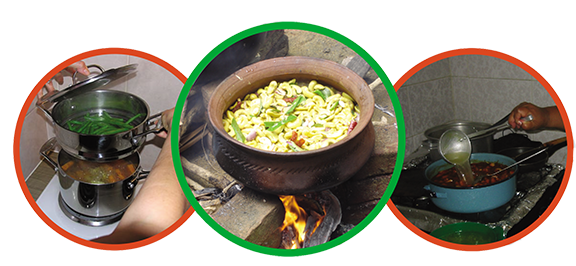

දෙමාපියන්ට සටහනක්

ආහාර සකස් කිරිම සහ පිසීම
ආහාර සැකසිමේදි යම් ආකාරයකට පෙළගස්වන ලද ක්රමවේදයකට අනුව අමු ද්රව්ය, සැකසු ආහාර බවට පෙරලේ, සරල ආහාර සැකසිමේ ක්රම (උදා :- වේලිම, පැසවිම, යෝගට්, මුදවාපු කිරි )වැනි ක්රම වල සිට සංකිර්ණ ආහාර සැකසිමේ ක්රම (චීස් සෑදිම, ක්ෂණික නුල්ඩ්ස්, සෝයා නිෂ්පාදන, විසිරි වියලන ලද ක්රම, බෝතල් / ටින් කළ ආහාර නිෂ්පාදන දක්වා විවිධ වේ. ආහාර සකස් කිරිමේ දී සිත් ඇදගන්නා පරිදි විවිධ අමුද්රව්ය එකතු කිරිමේන් සියුම් ලෙස රසය, පැහැය සහ ගති ස්වභාවය (Texture) වෙනස් කරනු ලැබේ.
සරලව ආහාර පිසිම යනු සෞඛ්යාරක්ෂිත ලෙසට නිසියාකාර වු ඌෂ්නත්වයකට භාජනය කිරිමෙන් ආහාර පරිභෝජණය කිරිමේ තත්ත්වයට පත්කිරිමයි. නිවසේදි හෝ ආහාර කර්මාන්තශාලාවකදී සිදුවන මුලික ක්රියා ( උදා :- කැපිම, සේදීම, රත්කිරිම ) අතර සමානාත්මතාවයක් දැකිය හැකිය. එහෙත් මෙම ක්රියාවලියේදි ප්රමාණාත්මක වෙනසක් දැකිය හැකිය.